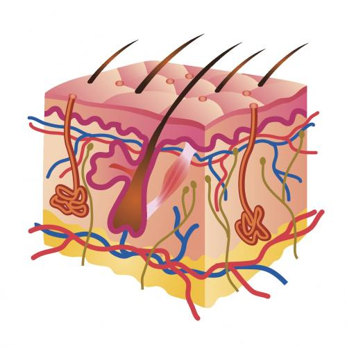

Pokožica je površinski sloj kože, koji je u direktnom dodiru sa spoljašnjom sredinom. Izgrađen je od nekoliko slojeva epitelnih ćelija. Gornje slojeve pokožice čine mrtve ćelije, ispunjene bjelančevinom keratinom; one se ljušte i odbacuju perutanjem. Najdublji sloj pokožice grade žive ćelije, koje se neprestano dijele. Zahvaljujući diobi ovih ćelija, koža se stalno obnavlja. Kojom diobom se razmnožavaju ove ćelije?
U pokožici se nalaze ćelije koje sadrže mrki pigment melanin. Ovaj pigment apsorbuje ultraljubičaste zrake, koji bi mogli da oštete žive ćelije u dubljim slojevima kože. Količina melanina je nasljedna, od nje zavisi boja kože. Kada se izlažemo Suncu, melanin migrira prema površini, te koža postaje tamnija.
 -->Pokožica ima nabore, koji zalaze u krzno i iz kojih izrastaju dlake. Dlaka nema samo na usnama, dlanovima i tabanima. Gotovo cijelom dužinom dlaku grade mrtve ćelije, koje su ispunjene keratinom. Žive ćelije nalaze se samo u korijenu dlake. Uz dlaku se nalazi i lojna žlijezda, koja luči loj; on čini dlaku mekom i savitljivom. Za donji dio dlake pričvršćen je glatki mišić čijom se kontrakcijom dlaka podiže ili spušta.
Na krajevima prstiju nalaze se nokti. Slično dlakama, slobodni kraj nokta građen je od mrtvih ćelija, ispunjenih keratinom. Korijen nokta grade žive ćelije pokožice koje se stalno dijele.